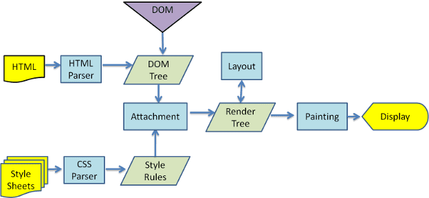

1. Cara Kerja Internet Secara Umum
Internet (Interconnected Network) adalah jaringan komputer global yang menghubungkan miliaran perangkat. Cara kerjanya menggunakan teknik bernama packet switching.
Saat kamu mengirim data (misal: email), data itu dipecah jadi bagian-bagian kecil bernama paket (packets). Setiap paket diberi alamat tujuan (alamat IP) dan berjalan melintasi jaringan, "melompat" dari satu router ke router berikutnya, mencari rute tercepat. Setelah semua paket tiba di tujuan, perangkat penerima menyatukannya kembali.
Proses ini diatur oleh protokol TCP/IP (Transmission Control Protocol/Internet Protocol). IP bertugas memberi alamat, dan TCP memastikan semua paket sampai dengan selamat dan utuh.

Sumber Referensi
Cloudflare. (2024). What is the Internet?
Mozilla Developer Network (MDN). (2024). How does the Internet work?
2. Definisi dan Cara Kerja HTTP & HTTPS
HTTP (Hypertext Transfer Protocol) adalah "bahasa" atau protokol yang digunakan browser untuk "berbicara" dengan server web. Saat kamu mengunjungi situs, browser mengirim *HTTP Request* (permintaan) ke server, dan server membalas dengan *HTTP Response* (tanggapan) yang berisi file HTML, CSS, dll.
HTTPS (Hypertext Transfer Protocol Secure) adalah versi aman dari HTTP. Bedanya, HTTPS menggunakan enkripsi SSL/TLS untuk mengamankan koneksi.
Cara kerja HTTPS: Sebelum mengirim data, browser dan server melakukan "jabat tangan SSL" untuk memverifikasi identitas server dan menyetujui "kunci" rahasia. Semua data yang dikirim kemudian dienkripsi menggunakan kunci itu. Jadi, jika ada yang mengintip, mereka hanya melihat data acak yang tidak bisa dibaca.
Sumber Referensi
Cloudflare. (2024). What is HTTP?
Google Cloud. (2024). What is HTTPS?
3. Definisi dan Cara Kerja Nama Domain
Nama Domain (misal: google.com) adalah alamat unik yang mudah diingat manusia untuk menemukan situs web. Ini adalah "nama panggilan" untuk alamat IP server yang rumit (misal: 142.250.190.78).
Cara kerjanya bergantung pada DNS (Domain Name System). Pemilik situs mendaftarkan domain, lalu "menautkannya" ke alamat IP server hosting mereka. Saat kamu mengetik nama domain di browser, browser akan bertanya ke sistem DNS untuk menerjemahkan nama domain itu menjadi alamat IP. Setelah dapat IP-nya, browser baru bisa terhubung ke server.
Sumber Referensi
Cloudflare. (2024). What is a domain name?
ICANN. (2024). How Domain Names Work.
4. Definisi dan Cara Kerja Hosting
Hosting (Web Hosting) adalah layanan penyewaan ruang di server fisik untuk menyimpan semua file situs web (HTML, CSS, gambar, database). Server ini adalah komputer kuat yang terhubung ke internet 24/7.
Bayangkan jika situs web adalah rumah, maka hosting adalah tanah tempat rumah itu berdiri, dan nama domain adalah alamat rumahnya.
Cara kerjanya: Kamu mengunggah file web-mu ke server hosting. Ketika seseorang mengunjungi domain-mu, DNS akan mengarahkan browser mereka ke alamat IP server hosting-mu. Server hosting kemudian menerima permintaan itu dan mengirimkan file-file situs web-mu kembali ke browser pengunjung.

Sumber Referensi
Mozilla Developer Network (MDN). (2024). What is web hosting?
Hostinger. (2024). What Is Web Hosting?
5. Definisi dan Cara Kerja DNS
DNS (Domain Name System) sering disebut sebagai "buku telepon internet". Ini adalah sistem global yang tugasnya menerjemahkan nama domain (google.com) menjadi alamat IP (142.250.190.78) yang dimengerti komputer.
Proses ini disebut DNS Lookup:
- Kamu ketik
google.comdi browser. - Browser bertanya ke DNS Resolver (dari ISP-mu).
- Resolver bertanya ke Root Server.
- Root Server mengarahkan ke TLD Server (yang mengurus
.com). - TLD Server mengarahkan ke Authoritative Nameserver (milik Google).
- Nameserver Google memberi tahu alamat IP-nya ke Resolver.
- Resolver memberi tahu alamat IP itu ke browser-mu.
- Browser terhubung ke alamat IP tersebut.
Sumber Referensi
Cloudflare. (2024). What is DNS?
Amazon Web Services (AWS). (2024). What Is DNS?
6. Definisi dan Cara Kerja Browser
Browser (Peramban Web) adalah aplikasi (seperti Chrome, Firefox, Safari) untuk mengambil, menyajikan, dan menjelajahi informasi di World Wide Web. Fungsi utamanya adalah menerjemahkan kode (HTML, CSS, JavaScript) menjadi halaman web visual yang interaktif.
Cara kerjanya (setelah mendapat IP dari DNS dan meminta data via HTTP):
- Parsing HTML: Browser membaca kode HTML untuk membangun struktur halaman (DOM Tree).
- Parsing CSS: Browser membaca kode CSS untuk membangun struktur gaya (CSSOM Tree).
- Render Tree: Browser menggabungkan DOM dan CSSOM untuk menentukan apa saja yang akan tampil.
- Layout (Tata Letak): Browser menghitung posisi dan ukuran pasti setiap elemen di layar.
- Painting (Menggambar): Browser "menggambar" piksel-piksel ke layar.
Browser juga menjalankan kode JavaScript, yang bisa mengubah struktur (DOM) atau gaya (CSSOM) secara dinamis, yang kemudian memicu proses Layout dan Painting ulang.
Sumber Referensi
Mozilla Developer Network (MDN). (2024). How browsers work.
web.dev (by Google). (2024). How the browser renders a web page.